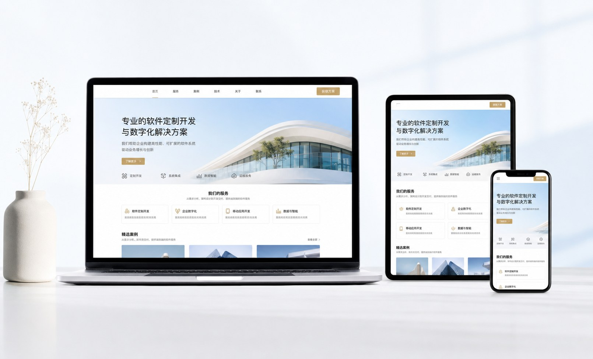
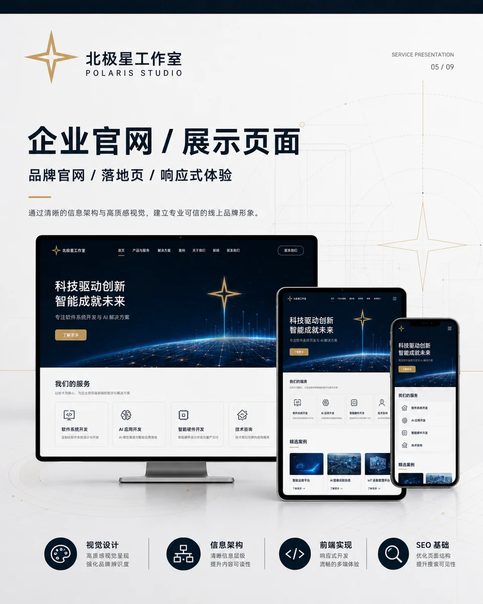
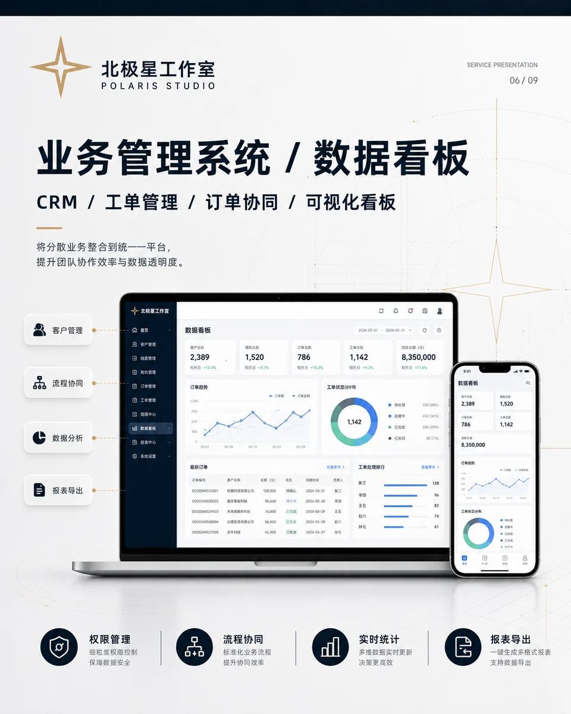
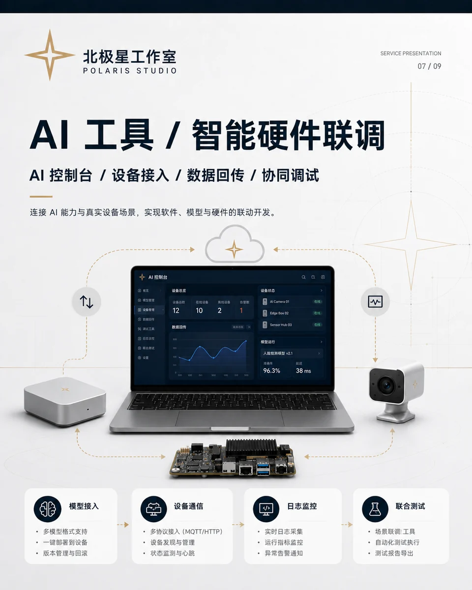

场景案例 01
企业官网 / 展示页面
软件系统开发
AI 应用开发
智能硬件开发
部署上线与维护
Audience
不同项目的起点不同：企业更关注流程、权限和数据沉淀，个人项目更关注快速落地、预算清晰和后续维护。北极星工作室按实际目标拆分方案。
适合销售团队、贸易分销、制造项目、服务型企业和需要替换旧系统的组织。
适合个人品牌、个体经营者、工作室、小团队和有明确想法的硬件项目。
Product Matrix
从一个官网、一个小程序、一套后台，到设备接入和经营数据看板，都可以从第一版核心功能开始建设，再按业务增长逐步扩展。
围绕客户、订单、库存、合同、回款、审批和报表建设业务系统，适合希望替代表格和旧工具的团队。
支持传感器、控制板、网关、设备接口和管理端联调，把现场数据、设备状态和业务后台连接起来。
建设品牌官网、落地页、预约入口、小程序和轻量后台，让个人服务、工作室业务和小团队项目可以快速上线。
支持国内服务器部署、Nginx、HTTPS、备案展示、基础 SEO、数据备份和上线后的问题修复与功能迭代。
Solutions
先从具体场景切入，把最影响效率或最需要验证的部分做出来，再逐步扩展到完整系统。
从线索、拜访、报价、合同到回款，建立完整销售过程管理。
打通采购、库存、订单、客户价格体系和多仓调拨。
连接订单、物料、生产进度、设备数据和交付节点。
替换 Excel、旧系统和孤立工具，保留必要流程并降低迁移阻力。
承接个人工具、作品展示、预约售卖、轻量后台和智能硬件验证版等需求。
Scenario Cases
用真实场景图说明可交付的项目类型，避免只讲概念。案例图作为服务场景展示，不包装成具体客户项目。

适合企业介绍、产品展示、品牌宣传、内容承载和客户咨询转化。

适合客户、工单、订单、流程、数据统计等内部管理需求。

适合 AI 控制台、设备接入、数据回传、传感采集和联合测试。
Delivery
从需求梳理到部署维护，每一步都围绕实际使用场景展开，避免只做页面、不解决业务流程或设备联调问题。
梳理组织、流程、角色、单据和现有系统。
确认关键页面、设备接口、数据流程和第一版上线边界。
完成数据导入、权限配置、培训和试运行。
根据业务变化维护报表、接口和功能模块。
支持公有云、专有云、本地化部署和轻量托管方案，可结合客户环境选择合适的上线方式。
可对接财务软件、OA、钉钉、企业微信、设备网关和第三方业务接口。
支持从 Excel、旧 CRM、旧 ERP、个人表格和业务数据库中整理并迁移核心资料。
可根据上线后的访问与咨询情况，继续优化页面、表单、统计、客服和线索跟进流程。
Launch Plan
官网、业务系统和软硬件项目不只要完成开发，还要考虑域名、备案、服务器、HTTPS、数据备份和后续维护。北极星工作室会把这些上线环节一起纳入方案。
确认服务对象、核心流程、设备接入范围和第一版上线边界。
完成页面、后台、接口、设备联调和必要的数据结构设计。
支持同服务器部署、Nginx 配置、HTTPS、备案号悬挂和基础 SEO。
按实际使用反馈继续优化表单、报表、接口、设备状态和内容页面。
Capability
不只完成页面和功能，还会把数据、接口、设备和上线维护一起纳入方案，形成长期可用的数字化产品。
官网、落地页、小程序、管理后台、数据看板和移动端 H5，优先保证访问速度和使用体验。
AI 问答、知识库助手、内容生成、资料整理、自动化流程和业务接口接入。
第三方接口、企业微信、钉钉、旧系统数据整理迁移、报表导入导出和 API 集成。
单片机、传感器、设备接入、协议适配、控制系统、可视化看板和轻量物联网验证。
FAQ
如果你的需求还不完整，可以先沟通目标和现状，再一起拆出第一版可落地范围。
可以。个人官网、小程序、预约系统、轻量后台、硬件验证版等需求都可以先沟通范围，再评估周期和预算。
可以。建议从最影响效率的流程开始，比如线索跟进、库存、订单、回款或报表，后续再逐步扩展。
可以先做数据盘点，确认字段、重复数据、历史记录和导入规则，再决定迁移范围。
可以。正式项目建议保留维护计划，包括问题修复、备份、功能迭代、数据调整和服务器安全更新。
Contact
添加企业微信后，可直接发送项目类型、当前阶段和主要需求。需要传送资料、合同或附件时，再使用邮箱沟通。